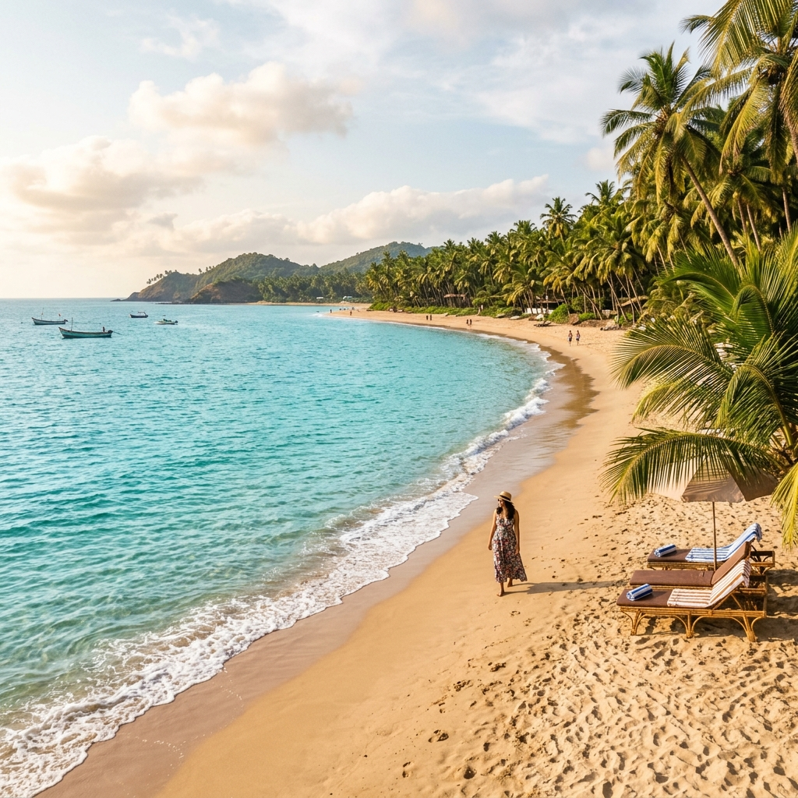
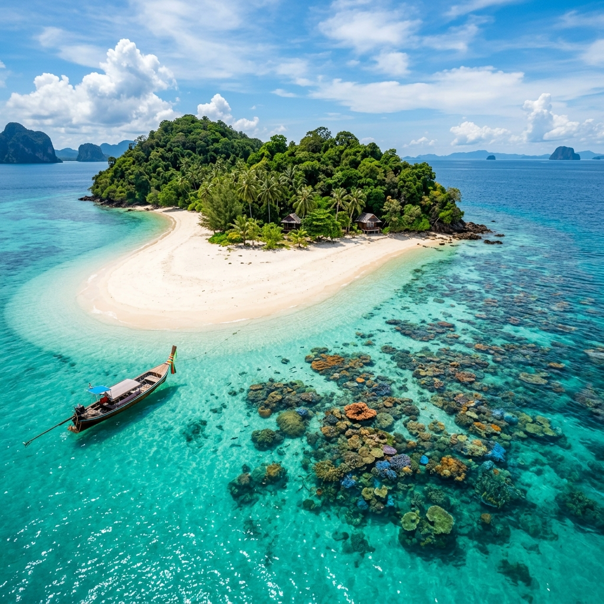

Mahabalipuram Lighthouse
Mahabalipuram, Tamil Nadu
🗓 Established: 1887
A landmark in a historic coastal town, connected with the evolution from older beacon traditions to conventional lighthouse service.
Discover historic towers, island beacons, and modern navigational landmarks that have guided mariners along India's long and diverse coastline.
Search by lighthouse, city, or keyword, and narrow the collection by state or union territory.
Showing all 12 lighthouses

Mahabalipuram, Tamil Nadu
A landmark in a historic coastal town, connected with the evolution from older beacon traditions to conventional lighthouse service.

Alappuzha, Kerala
A surviving reminder of Alappuzha's importance as a historic port and coastal trading centre in the former Travancore region.
Chennai, Tamil Nadu
One of India's best-known urban lighthouses, standing beside the Marina shoreline and representing modern coastal navigation.
Kovalam, Kerala
A prominent red-and-white coastal beacon near Kovalam, associated with one of Kerala's most visited seaside areas.
Kollam, Kerala
A prominent heritage lighthouse on Kerala's coast, closely associated with Kollam's long maritime and trading history.
Pamban Island, Tamil Nadu
A navigational landmark for vessels moving through the Pamban area, linking island geography with India's maritime history.
Okha, Gujarat
An important navigational station serving the Gulf of Kutch–Okha region and later expanded with radio and positioning systems.
Diu
The site preserves a layered lighthouse history, from an older sandstone tower to a later modern light station.
Raigad, Maharashtra
Positioned above the Konkan coast to support vessels and fishing boats operating around the Murud-Janjira harbour area.
Sinquerim, Goa
Part of Goa's celebrated Fort Aguada landscape, where coastal defence and maritime navigation meet tourism and heritage.
Gopalpur, Odisha
A Bay of Bengal navigational landmark associated with Gopalpur's seafaring character and historic port connections.
Sagar Island, West Bengal
A beacon in the complex Ganga delta environment, where riverine and maritime navigation converge near the Bay of Bengal.
Try another search term or choose a different state.